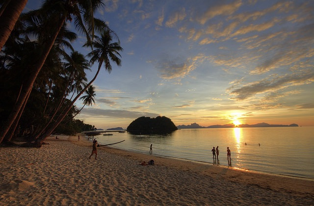
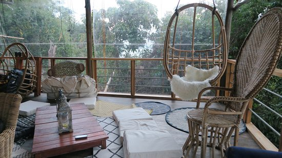
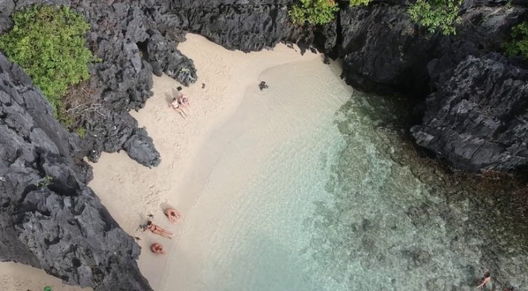
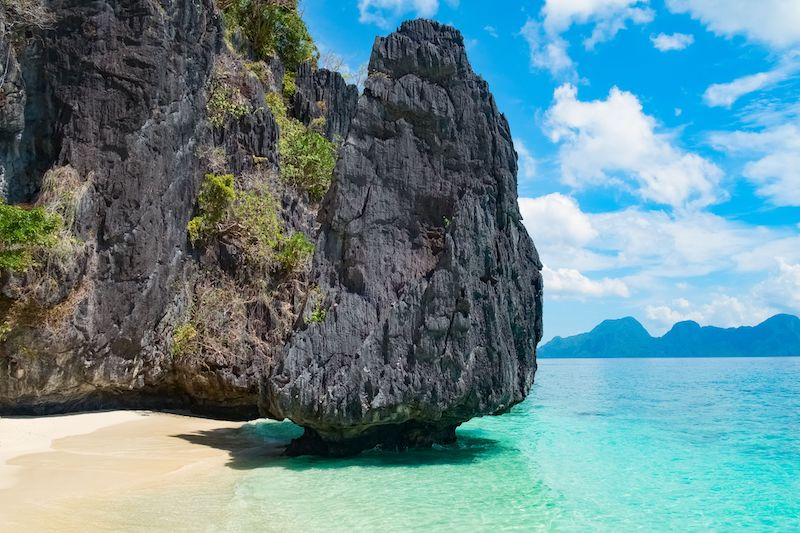
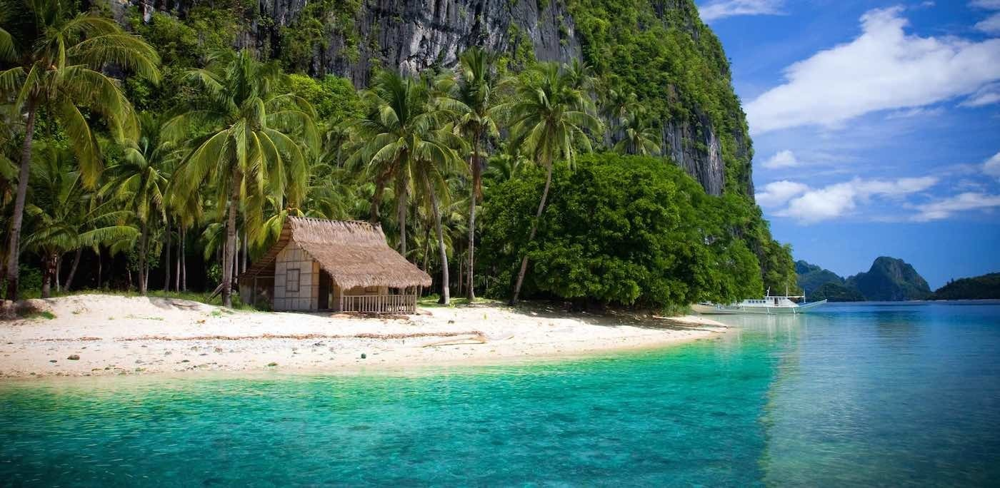
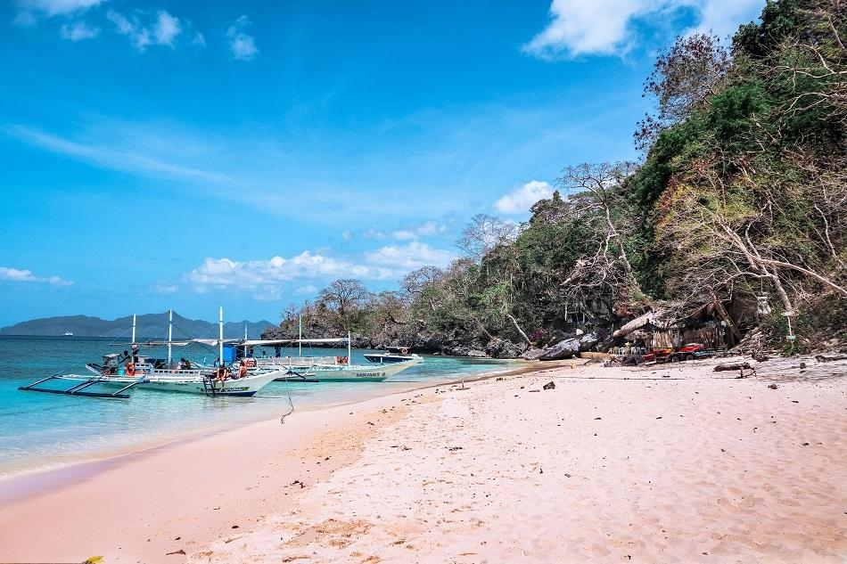
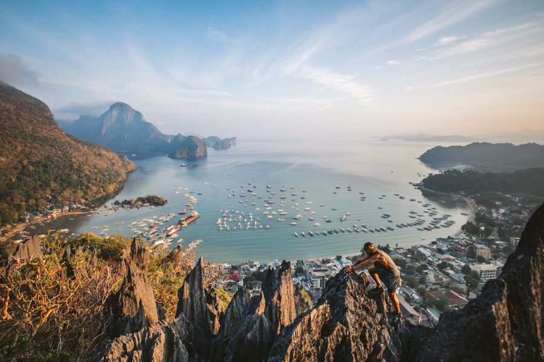
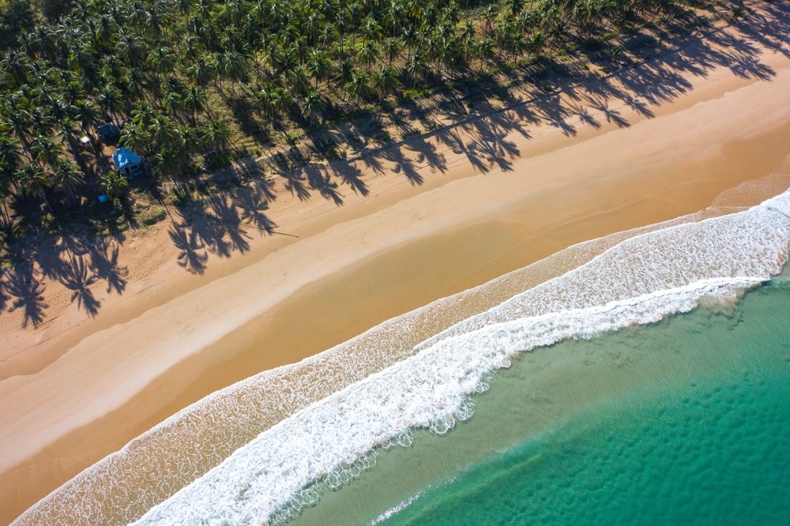

Wecome to Palawan.
Palawan, officially the Province of Palawan, is an archipelagic province of the Philippines that is located in the region of Mimaropa. It is truly a beauty to behold, with its famous white sand beaches, turquoise waters, coral reefs, and splendid limestone rock formations and in this website we will be showcasing the beauty of Palawan.
-A sneak peak to the beauty of Palawan-
Attractions
Las Cabanas
 Las cabanas is a secluded beach. It will make you feel like you are in your private beach. The only thing you will see in Las Cabanas when you wake up are ghost crabs and reef fish as the ocean breeze will pass by your face, You will truly feel what beach life is.
What travelers are saying
The water and views are beautiful, with a lot of cosy chill bars and restaurants along the beach with fatboy's and chill music and nice food and fruit shakes.
I came here after a day of touring and was great to have a swim to unwind and watch the sunset.
Location:
Corong corong, El Nido, Palawan, Philippines, 5313 (Visit Now!)
The Bird House
 The magnificent Bird house in El nido, Palawan. However before you can see this wonderful site you will need stamina and alot of patience to get here, trust me. To get here you need approximately 70 steps down from the road, walk around 600 meters across the Maremegmeg Beach, walk another 150 meters going inside a forest. and climb up 200 steps to reach the top. But it doesnt mean going through this hectic journy will give you nothing, as you pass those sites you will get to experience the marvel the sights of nature will give.
What travelers are saying
We define nest as a dwelling during your brief migration to El Nido. Find a place to rest you and your families' heads during a vacation is. After your first stay we imagine you will continue to return to The Birdhouse dwelling during you future migrations. Stay on a hillside property overlooking Bacuit Bay (beautiful view) in large luxury tents (5 m in diameter) w private bathroom.
I 've been hearing a lot of good reviews abt this restaurant so we decided to visit when we went to El nido last week. It's one of the best places we've been too, showing the beauty of El nido while enjoying your meal. Their staff are attentive and the food is recommended, too. I will definitely come back once I get the chance to travel again in El nido. I highly recommend it!
Location:
Sito Pakalsada, Barangay Corong Corong, El Nido, 5313 Palawan (Visit Now!)
The Secret Beach
 The Secret beach of El Nido. Now lets find out how this secret beach became a secret and how they unravelled the secret of this beautiful beach. "There was a poor traveller travelling with his six poor friends. After there Satisfying lunch at one of the beaches in palawan they were feeling exhausted. As they fell asleep by the waves slapping throught their boat. as they woke up one of the travellers saw the secret beach and the others taught he was joking because it is really hidden.". The Wall-like gray karst cliffs surrounding me went ignored as I stood in the middle of a pocket of white beach on one edge of Matinloc Island. I was at the so called “Secret Beach,”.
What travelers are saying
We were taken to this beach by Kraken's boat and found it wonderful! After you pass the hidden entrance, you can see a fantastic place with a perfect mix between lush and vegetation, white sand and clear waters!
Do not miss it; book a private tour and do whatever you can to reach it before the mob arrives; this beach is somewhat off the path of the organized tours and therefore you will bump into much smaller crowds but yet there is something magic to be the first to paddle into the lagoon and walk on the white sand, still a little cold and damp from the night!
Location:
Matinloc Island, El Nido, Palawan Island Philippines (Visit Now!)
Entalula Island
 The tiny pristine island of Entalula, aside from being private because it is utilize by the el nido resort. Part of this island is open for the public especially in eastern most part of this island. The beautiful beachscapes and amazing sights is present here in this small island. The wonderful towering rock formations are scattered around the beach. Making it perfect for a photoshoot. Entalula is famous for its long white sand and crystal like sea. Tourist can also go snorkling and the amazing part is expect a Nemo-like Fish to come say hi to you.
What travelers are saying
We had our sunrise breakfast picnic here in Entalula as arranged by Miniloc. It really has such a great sunrise view, worth waking up for!
We had this tiny paradise for ourselves for one whole hour. Softest white, fine sand, crystal clear water. Definitely one of our favorite spots.
Location:
Bacuit Bay, El Nido, Palawan Island Philippines (Visit Now!)
Pinagbuyutan Island
 Pinagbuyutan island with towering cliffs and stone formations is really an amazing sight shooting straight down over the small stretches of beach bellow. In this island there are many scattering palm tree that you will actually get nervous sitting under them. The island is also great for snorkling with beautifull reefs waiting bellow the surfaces.
What travelers are saying
Preserving the original ecology of the island, with blue sky and clear water, walking slowly along the junction of sand and sea, it feels very romantic, because there are not many people, it is worth staying here for a while and snorkeling for a while , Feel the clear water of El Nido.
One of the attractions of the island hopping tour is relatively small compared to other attractions. It is a very well-equipped small island. It is not much different from other islands. The water is clear and white and the coconut groves are lush. Snorkeling here is also Very suitable.
Location:
Pinagbuyutan Island, El Nido (Visit Now!)
Seven Commandos Beach
 The seven commando name comes from the coconut trees standing with pride and tall like they are ready for battle. At the same time, as our boat inched closer to the shore, their leaves waved like mothers eagerly awaiting the return of their long lost children. We, the lost children, jumped off of our boats and embraced the wide bed of white sand, which gently gets steeper as you move farther inland. That’s what makes 7 Commandos Beach an ideal place for a romance with the sun. It has a vast sandy shore that is perfect for sunbathing or playing sports or simply lazing.
What travelers are saying
Nice end to a private secret lagoon, secluded beach tour. A little to much of a party central for our taste and washrooms were very primitive. We were repeatedly told to give donation for using washroom. Cash only!
Amazing secluded clean beach. There are corals just a few meters from the beach, so you can snorkel or dive in the pristine clear water. We had a few happy local dogs playing with us, swimming and cuddling. There is a bar serving fresh cold coconut and other beverages. We came here early as Part of the tour A(reversed). It gets crowded on the way back in the afternoon.
Location:
Seven Commandos Beach, Palawan (Visit Now!)
The Taraw Cliif
 With the height of 230 meters, Taraw cliff stands tall with very amazing view on the top. A limestone cliff right in the heart of downtown El Nido that offers a panoramic view of Bacuit Bay. it will take you 45 minutes to reach the peak of this amazing cliff. And it is best done in sunrise or sunset trek. Please do not trek on your own so that you will have a safety journey.
What travelers are saying
Spectacular views, beautiful rocky & green surroundings! Very picturesque. It’s bit more challenging canopy walk then those I’ve done in past. Make sure you have good walking/ hiking shoes as you’ll need them especially for the first, which is also last steep part. Don’t wear flip flops like I did.
We met up with our tour guide at 6am and started walking to the jump off point. From there, our ascent was gradual but immediately required some rock climbing/scrambling skills. The terrain was rocky and steep with sharp limestone rocks that needed proper climbing shoes or at least trainers to protect your feet. Gloves would also be useful to aid climbers in the hazardous journey.
Location:
Barangay Buena Suerte, El Nido, Palawan (Visit Now!)
Nacpan Beach
 The ride here is a bit bumpy but also worth it as you get to experience the beauty of Nacpan beach. The beautiful landscape, the palm trees scattering on the beach, with the sandy dirt roads all in here is really woth the ride. Nacpan is one of the beaches with most stretched sand in palawan with 4 kilometer soft creamed color sand and coconuts as you look up. The ocean breeze will trully be mesmerize by the people.
What travelers are saying
Nacpan Beach is a must see if you are in El Nido. The beach is large with many shops, drink stands and places to eat. As with all must see tourist sites it can get very crowed. Still worth it for a day trip.
We were practically alone in Nacpan Beach! It was a really big beach and we used the ATV and hung out at Angkla Beach Resort.
Location:
Sitio Calitang, Barangay Bucana, El Nido, Palawan Island 1131 Philippines (Visit Now!)
Small Lagoon
 The Small Lagoon is a bit hidden. Unlike the Big Lagoon next door, which has a big open channel, the Small Lagoon can only be entered through a tiny crack in the limestone rock wall. It’s only possible to swim inside or enter with a kayak (make sure to duck your head it really is a tight entrance). This makes the Small Lagoon pretty special and it has a uique atmosphere inside the narrow lagoon.
The Small Lagoon is a bit hidden. Unlike the Big Lagoon next door, which has a big open channel, the Small Lagoon can only be entered through a tiny crack in the limestone rock wall. It’s only possible to swim inside or enter with a kayak (make sure to duck your head it really is a tight entrance). This makes the Small Lagoon pretty special and it has a uique atmosphere inside the narrow lagoon.
What travelers are saying
Small lagoon was beautiful and well preserved. It was a nice and chill kayaking experience. We also took a nice swim within the lagoon
At first you'd get a bit scared kayaking in such a quiet lagoon but when you reach the inner part, you'll see a very lovely sight. Its very beautiful
Location:
El Nido, Palawan Island Philippines (Visit Now!)
Big Lagoon
 Not only it is a beautiful sight on the land it is also beautiful up above the sky. The big lagoon is really truly magnificent sight to see in El Nido.A narrow and shallow entrance channel leads you out into a giant lagoon surrounded by epic limestone cliffs. It has it all From Kayaking to Snorkling. The big lagoon offers you many fun oppurtunities for you and for your family.
Not only it is a beautiful sight on the land it is also beautiful up above the sky. The big lagoon is really truly magnificent sight to see in El Nido.A narrow and shallow entrance channel leads you out into a giant lagoon surrounded by epic limestone cliffs. It has it all From Kayaking to Snorkling. The big lagoon offers you many fun oppurtunities for you and for your family.
What travelers are saying
Although I rarely take tours this one was a lot of fun. Exploring the coast. Eating a great meal provided by the crew and swimming in the various locations was a great experience. Once inside the lagoon and being surrounded by the high cliffs it is an amazing experience.
We kayaked around the lagoon and it waz great as very few visitors. So we were truly privileged to be able to soaked in the scenery in a rather quiet environment!
Location:
Minolic Island, El Nido (Visit Now!)
Guides.
Here are alot of things you can do in El Nido, Palawan From lounging on the beaches, Hiking and Trekking the cliffs and even scuba diving. By this guide you will not be having a problem what to do first.
We suggest you to visit the said above places. Including the Seven Wonders in El Nido tours.
- Small lagoon
- Matinloc Island
- Cave Exploration
- Tapiutan Strait
- Cadlao Channel
- History Islands
Note that these destinations limits the guests that can enter at once, aside from getting crowded, we currently have a pandemic going so we will limit the guests that can get in here and take turns of who can experience this amazing sites,
NOTE: We will prioritize the safety of the tourist no matter what happens.
We offer some single destinations tours. This is for travelers that want to relax without really having to move from one attraction to another. Below are the best single-destination tours given.
- East and Main Entalula
- West entalula
- Papaya Beach
The same as the Seven Wonders of El Nido tours the guests that can enter is also Limited in here.
NOTE: We will prioritize the safety of the tourist no matter what happens.
When is the best time to go to El Nido you ask? The best season to go here is in January to April. This is when the dry and summer season begins. You will enjoy and be mesmerized by the amazing sunset and sunrise. And no tropical storm will disturb your vacation in this season.
What to Wear?
Prepare your summer outfits and breathable clothes because in El Nido especially in the summer it is hot in here. Make sure to bring Sun Protection, Sunglasses and many more. And if you're planning to go on an adventure in El Nido at night, you might as well bring some scarves because it sure can be chilly. This is for you to keep you warm if you are at the beach.